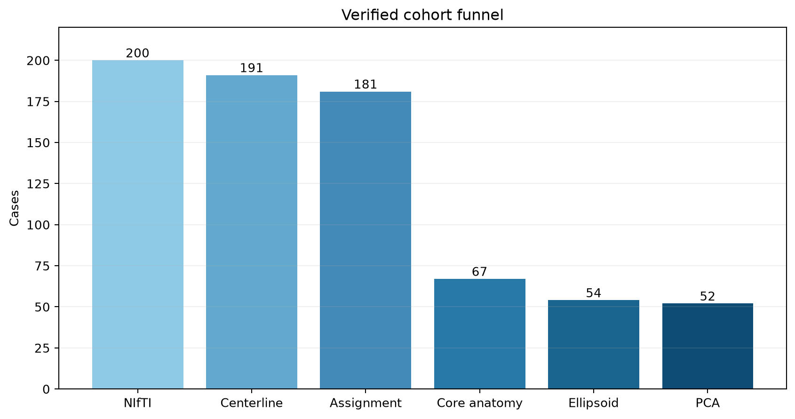
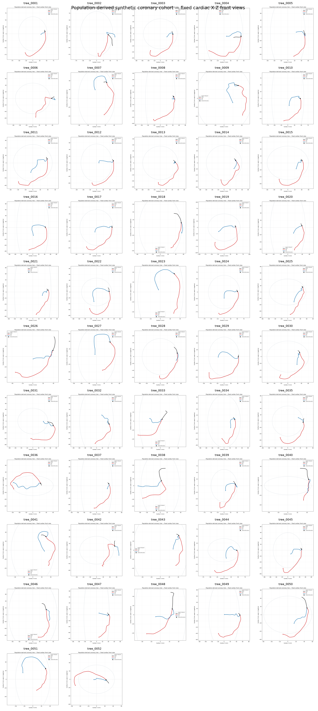
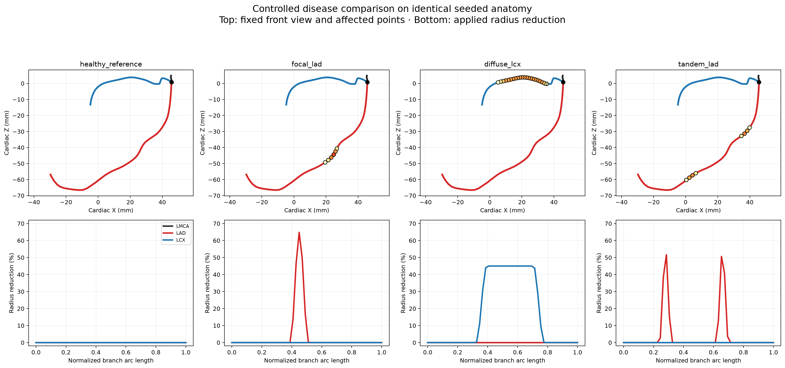
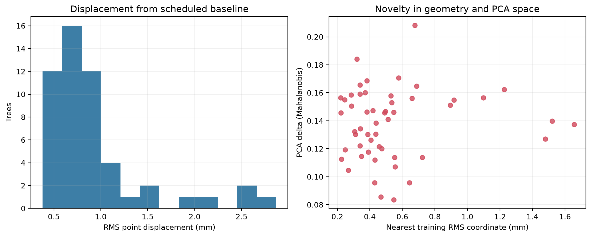
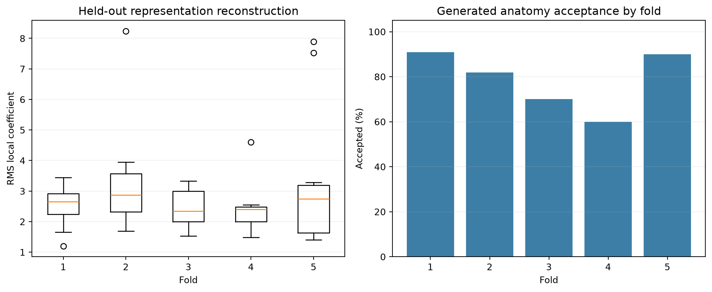

2. Anatomical scaffold and PCA


Five LMCA + twelve LAD + ten LCX points = 27 corresponding points = 81 XYZ dimensions. Thirteen modes retain 95.55% of eligible-cohort variance. Protected centerline modification: 0.0 mm.
Population-Derived Disease-Aware 4D Major-Vessel LCA Generator
Research/engineering prototype. Not clinically validated. Validated topology: LMCA → LAD + LCX. No population-derived RCA.

200 source labels → 191 extracted LCA → 181 resolved LAD/LCX → 65 core anatomy pass → 52 PCA eligible.
Five LMCA + twelve LAD + ten LCX points = 27 corresponding points = 81 XYZ dimensions. Thirteen modes retain 95.55% of eligible-cohort variance. Protected centerline modification: 0.0 mm.


A genuine composite cubic B-spline preserves terminals and the shared bifurcation. Disease changes radius only; healthy-versus-disease XYZ difference is 0.0 mm.


Ten stored frames = nine independent positions + closure. Maximum demonstrated displacement: 7.8104 mm. Healthy global radius change: 2.9916%. Lesions respond at about 35-39% of healthy under the parametric compliance model.


Zero exact/near duplicates. Internal source-grouped holdout: 41/52 accepted, 78.85%, zero source/baseline leakage. This is anatomical generation acceptance, not classification accuracy or external validation.

Open ..\..\demo_cases\focal_lad\vtk\cine.pvd, click Apply, color by radius_mm or disease_reduction_fraction, and press Play.